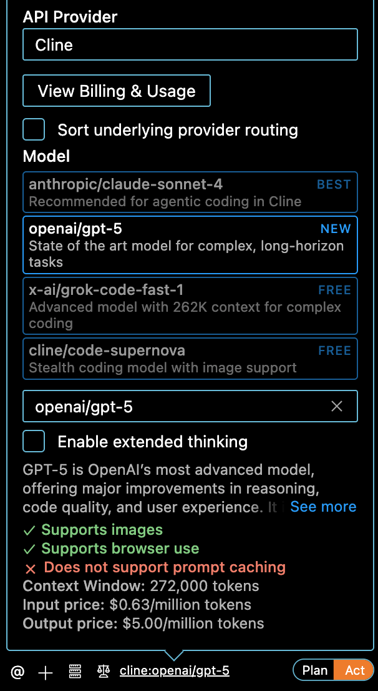
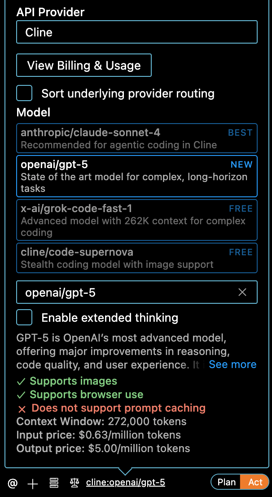

The Initial Idea
I have a specific idea of what the extension should be like. I described to ChatGPT what I had in mind: the target users, the workflow, and the main functions. Instead of asking for code right away, I requested a detailed, code-free design document. This gave me a clear blueprint of what the extension should do.
Bringing in Cline
I conducted the entire development process inside Visual Studio Code (VS Code), which became the central workspace for building my extension. To make this possible, I relied on an open-source coding agent called Cline. Unlike simple autocomplete tools, Cline is an agentic coding tool that integrates directly with editors like VS Code to perform complex, multi-step tasks. It can understand entire codebases, plan and implement sophisticated changes, and execute tasks by reading and editing files, running terminal commands, and even browsing the web—once you grant it permission. In other words, it functions more like a true coding collaborator than a mere assistant.
 

In my workflow, I primarily used two large language models. The first was GPT-5 Codex, which I chose for generating the initial foundation of my project. It’s currently one of the most powerful models for coding tasks, and I trusted it to establish a strong base by producing the first version of the code. After that, I switched to GPT-5 for the following iterations and refinements. This was mainly a practical decision because GPT-5 is more cost-effective.
I fed them the document and asked them to generate the base code. Codex went all out—it wrote nearly a thousand lines of code and produced several files that I honestly couldn’t make sense of at first.

So I asked the agent to provide me with a step-by-step file instructing me on how to install the extension in Chrome. It did exactly that, using clear natural language:
PromptBooster Extension Installation Guide
This guide will walk you through installing the PromptBooster browser extension step by step.
The extension works on Google Chrome, Microsoft Edge, and other Chromium-based browsers.
If you’re new to browser extensions, don’t worry—this is straightforward!
Prerequisites
- A computer with Google Chrome or another Chromium-based browser (like Edge or Brave) installed.
- Basic familiarity with your operating system (e.g., how to open folders and run commands).
- (Optional) Node.js installed on your system if you need to build the extension from source. You can download it from nodejs.org if it’s not already installed.
Note: If you’re installing a pre-built version, you don’t need Node.js. Check if the repository has a built version.
If nodistfolder is visible, you may need to build.
Step 1: Download the Extension Code
- Go to the GitHub repository: PromptBooster.
- Click the green Code button.
- Select Download ZIP to download the source code.
- Unzip the file to a folder on your computer (e.g., Desktop or Documents). This folder will be your extension’s root directory.
Alternatively, with Git installed:
git clone https://github.com/CharlotteZSY0205/PromptBooster.git
cd PromptBoosterStep 2: (Optional) Build the Extension
If there’s no dist or build folder in the unzipped/cloned directory, or you see source files like .js in src/, build as follows:
Open a terminal/command prompt.
Navigate to the extension’s root folder (where
package.jsonis located):cd Desktop/PromptBoosterInstall dependencies:
npm installBuild the extension:
npm run build
Tip for novices: If you see an error, try skipping to Step 3. Many extensions don’t need building.
Step 3: Load the Extension into Your Browser
Google Chrome
Open Chrome.
Go to
chrome://extensions/.Enable Developer mode (top-right corner).
Click Load unpacked.
Select the extension’s root folder (must contain
manifest.json).- If you built it: select the
distorbuildfolder.
- If you built it: select the
Microsoft Edge
- Open Edge.
- Go to
edge://extensions/. - Enable Developer mode (bottom-left corner).
- Click Load unpacked.
- Select the extension’s root folder.
Firefox
⚠️ The extension is designed for Chromium-based browsers. Using it in Firefox requires conversion, which is more advanced. If you’re a beginner, use Chrome or Edge instead.
Step 4: Configure the Extension
Open
chrome://extensions(oredge://extensions).Find PromptBooster → click Details → Extension options.
Configure:
- API Key: Paste your OpenAI-compatible API key.
- API Endpoint URL: Default values are usually fine.
- Model: e.g., GPT-4.
- Default Mode: Recommended: Learning Mode.
- Preview Option: Enable if you want to review rewritten prompts before sending.
Tip: Get an API key from OpenAI if you don’t already have one.
Step 5: Test the Extension
Go to ChatGPT (or another supported chatbot).
Log in.
Type a prompt, e.g.,
Tell me about dogs.You should see a Boost Prompt button next to Send.
Click Boost Prompt.
- If preview is enabled, you’ll see the rewritten prompt first.
In the chat history, you’ll see both your original and boosted prompts.
Troubleshooting
- Extension not loading? Make sure you selected the correct folder (must contain
manifest.json). - API errors? Double-check your API key, endpoint, and model.
- Button not showing? Refresh the page and make sure you’re on
chat.openai.com. - Build failed? Skip building and load the source directly.
- Permission issues? Grant storage and active tab permissions when prompted.
What’s Next?
- Explore different modes in settings: Learning Mode, Structured Mode, etc.
- Refer to the repository’s
README.mdfor advanced features. - If you encounter issues, check the GitHub repository for updates.
Happy prompting! 🚀
</div>
<div style="display: flex; align-items: center; gap: 18px;">
<img src="2.png" style="width:40%; max-height:600px; object-fit:contain;"/>
<div style="flex:1;">
<mark>Later, after completing the installation, I expected to see some elements of my extension appear on the ChatGPT website. But when I opened the page, nothing had changed. To investigate, I opened up the DevTool of the browser, which exposed the underlying code of the site. I located the elements for the input bar in the ChatGPT interface and copied them. Then I went back to the Cline with a question: *“I should see a button from Chrome Booster here in this section, but there’s nothing. Could you help me resolve it?”*
</div>
</div>
### Takeaways
First, collaborating with AI to develop an extension or software is ideal for multitasking. Since AI needs time to process requirements, analyze the code, and propose the best strategy, I can use that waiting period to tackle other tasks. For example, while developing this extension, I also worked on writing this blog about the process. This not only saved time but also helped me preserve a fresh memory of the entire workflow.
Second, even though AI is capable of debugging, we still need to stay flexible and adapt to the current status of the code. Sometimes, when AI fails to achieve a goal after several attempts, it’s necessary to explore alternative solutions. For instance, I found it useful to ask AI to generate logs and then feed those logs back into the system. This gave AI a clearer picture of what had been accomplished and what went wrong. In other words, we cannot simply expect AI to finish the task on its own — we have to think critically and provide multiple options or strategies to guide it.
Third, it’s important to remember to push the code once it reaches a satisfying state. If you move on to the next iteration and AI makes major changes that worsen the outcome, you’ll want to revert to the earlier version. That’s only possible if you’ve pushed it beforehand. As a bonus tip, if you’re unhappy with the current version, you can use git stash to temporarily save it in a separate place. That way, you can easily return to the most recent pushed version whenever needed.